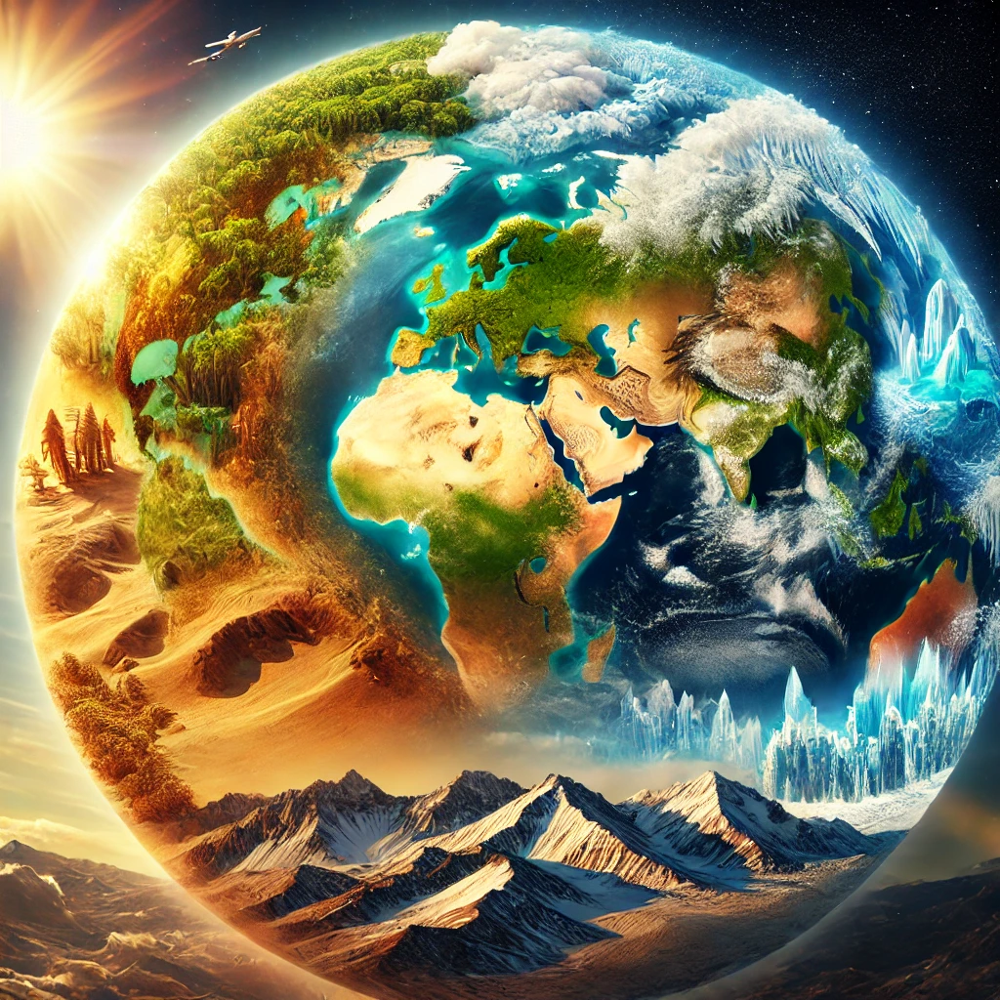

Types of Climate
The Earth experiences a wide variety of climates, each with unique characteristics:
- Tropical Climate: Found near the equator, characterized by high temperatures and heavy rainfall throughout the year. Example: Amazon Rainforest.
- Desert Climate: Extremely dry with very little precipitation. Examples: Sahara Desert and Arabian Desert.
- Temperate Climate: Mild weather with four distinct seasons. Example: Mediterranean regions like Southern California and parts of Europe.
- Polar Climate: Cold climates with snow and ice, found at the poles. Example: Antarctica and the Arctic.
- Mountain Climate: Found in high altitudes with cold temperatures and significant snowfall. Example: The Himalayas.
Climate Change
Climate change refers to long-term changes in temperature, precipitation patterns, and other atmospheric conditions. The Earth's climate is warming due to human activities like deforestation, burning of fossil fuels, and industrial processes.
Effects of Climate Change:
- Rising Sea Levels: Melting glaciers and ice sheets are causing the oceans to rise, threatening coastal cities.
- Extreme Weather Events: Increased frequency of hurricanes, droughts, heatwaves, and flooding.
- Loss of Biodiversity: Many species are unable to adapt to rapidly changing climates, leading to extinction.
- Impact on Agriculture: Changing weather patterns are affecting crop production and food security worldwide.
Why Is Climate Change Happening?
The primary cause of current climate change is human activity, including:
- Burning of fossil fuels (coal, oil, and natural gas) for energy.
- Deforestation and land use changes that increase the amount of carbon dioxide in the atmosphere.
- Industrial agriculture and livestock farming, contributing to greenhouse gases like methane.
Global Warming
Global warming refers to the long-term increase in Earth’s average surface temperature due to human activities. It is primarily caused by the accumulation of greenhouse gases in the atmosphere, which trap heat and prevent it from escaping into space.
Greenhouse Gases:
- Carbon Dioxide (CO2): Emitted by burning fossil fuels.
- Methane (CH4): Released by livestock and the decay of organic waste in landfills.
- Nitrous Oxide (N2O): Emitted by agricultural and industrial activities.
Consequences of Global Warming:
- Melting of polar ice caps and glaciers.
- More frequent and intense heatwaves.
- Disruption of ecosystems and weather patterns.
Solutions to Combat Climate Change
Several actions can be taken to mitigate climate change and reduce its impact:
- Reduce Carbon Emissions: Transition to renewable energy sources such as wind, solar, and hydroelectric power.
- Reforestation: Plant trees to absorb carbon dioxide and restore ecosystems.
- Energy Efficiency: Improve energy efficiency in buildings, transportation, and industries.
- Climate Education: Raise awareness about the importance of sustainable practices and encourage individuals to adopt eco-friendly habits.
